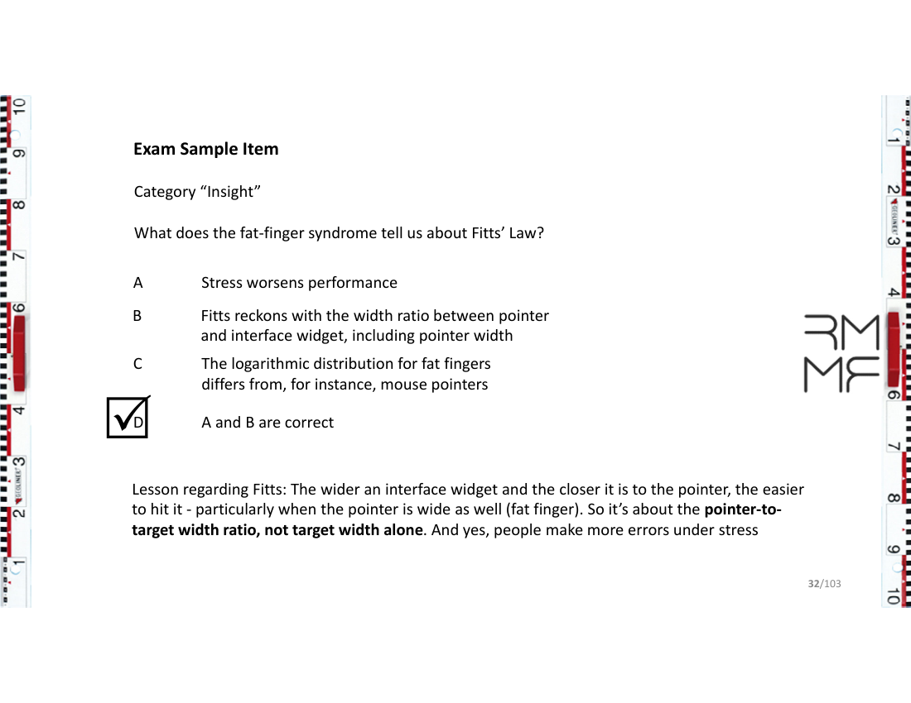
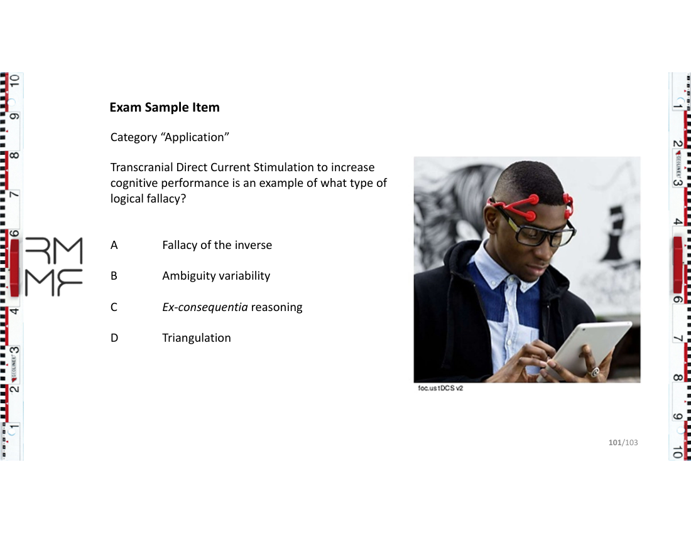

EXAM / L05
L05 · 逐题复习（4 组） 解析默认收起，可先选答案再展开核对，作答与错题自动保存。
L05-E01 · Insight · 选择题 fat finger 与 Fitts：最佳答案要完整 05 Σ SD5979 Behav&Physio 2026 10 02.pdf 第 31 页 · 点图放大
题干中文译文 考试样题
我的作答 A B C D ☆ 加入错题本
查看老师答案与逐项解析 ▾ C 依据不符
老师答案页没有把差异归于另一种对数分布。
这些选项的概念，课件正文是否出现过？ 检索全部 903 页（排除题目、答案页与参考文献页）。
老师原答案与延续页 
05 Σ SD5979 Behav&Physio 2026 10 02.pdf 第 32 页 · 点图放大
L05-E02 · Insight · 开放题 预警与对手：最难条件 05 Σ SD5979 Behav&Physio 2026 10 02.pdf 第 41 页 · 点图放大
题干中文译文 考试样题：开放式问答题
我的作答 ☆ 加入错题本
查看老师答案与逐项解析 ▾ A · 最困难条件 条件 2：没有预警，却出现需要射击的对手。
B · 表现如何？ 反应更慢，错误率更高，即效率更低。
老师原答案与延续页 05 Σ SD5979 Behav&Physio 2026 10 02.pdf 第 42 页 · 点图放大
L05-E03 · Application · 开放题 测谎系统：中性基线 05 Σ SD5979 Behav&Physio 2026 10 02.pdf 第 65 页 · 点图放大
题干中文译文 65/103
我的作答 ☆ 加入错题本
查看老师答案与逐项解析 ▾ A · 中性基线的问题 被检查是否说谎时，很难处于真正情绪中性的状态。
B · 其他变异来源 感冒、恋爱或失恋、恐惧、烦恼、愤怒等。
C · 可能没有这些变异的人 受过声音训练者：职业扑克玩家、特工、惯犯、舞台演员。
老师原答案与延续页 05 Σ SD5979 Behav&Physio 2026 10 02.pdf 第 65 页 · 点图放大
L05-E04 · Application · 选择题 思考→激活，能否反推？ 
05 Σ SD5979 Behav&Physio 2026 10 02.pdf 第 101 页 · 点图放大
题干中文译文 考试样题
我的作答 A B C D ☆ 加入错题本
查看老师答案与逐项解析 ▾ C 正确
思考时激活，不代表刺激皮层就会思考或提高能力。
D 概念错位
triangulation 不是这类反向因果推理。
这些选项的概念，课件正文是否出现过？ 检索全部 903 页（排除题目、答案页与参考文献页）。
Fallacy of the inverse 未检出独立正文原词命中
这不证明概念从未以其他表达讲过；不把它直接当成该选项错误的理由。
Ambiguity variability 未检出独立正文原词命中
这不证明概念从未以其他表达讲过；不把它直接当成该选项错误的理由。
Ex-consequentia 正文原词命中 2 页
老师原答案与延续页 05 Σ SD5979 Behav&Physio 2026 10 02.pdf 第 102 页 · 点图放大